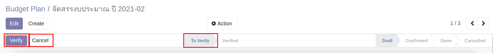

ระบบบริหารงบประมาณ (Budgeting Management System)#
เอกสารนี้สำหรับ :: ผู้มีสิทธิ Verify เอกสารต่างๆ
การ Verify Budget Plan#
หลังจากได้รับแจ้งให้ Verify เอกสาร Budget Plan จากทางฝ่ายแผน ทำการ Verify ตามขั้นตอนดังนี้
Menu :: Budgeting > Budgeting > Budget Plan
- เลือก Budget Plan ที่ได้รับแจ้งให้ทำการ Verify สถานะเอกสารอยู่ที่ To Verify
-
ตรวจสอบเอกสาร Budget Plan
- หากถูกต้องครบถ้วน กดปุ่ม "Verify"
- หากไม่ถูกต้อง กดปุ่ม "Cancel" 
-
หลักจาก Verify หรือ Cancel เสร็จแล้ว แจ้งกลับฝ่ายแผนให้ดำเนินงานต่อในขั้นตอนถัดไป
การ Verify Budget Trnasfer#
หลังจากได้รับแจ้งให้ Verify เอกสาร Budget Transfer จากพนักงานทั่วไป (Budget User) ทำการ Verify ตามขั้นตอนดังนี้
Menu :: Budgeting > Budgeting > Budget Transfer
- เลือกเอกสาร Budget Transfer ที่ได้รับแจ้งให้ทำการ Verify สถานะเอกสารอยู่ที่ To Verify
- ตรวจสอบเอกสาร
- หากถูกต้องครบถ้วน กดปุ่ม "Verify" ระบบจะส่งเอกสารขออนุมัติตามลำดับ
- หากไม่ถูกต้อง กดปุ่ม "Cancel" ระบบจะยกเลิกเอกสารคืนพนักงานทั่วไป

การ Verify Budget Carry Forward#
หลังจากได้รับแจ้งให้ Verify เอกสาร Budget Carry Forward จากทางฝ่ายแผน ทำการ Verify ตามขั้นตอนดังนี้
Menu :: Budgeting > Budgeting > Budget Carry Forward
- เลือก Budget Carry Forward ที่ได้รับแจ้งให้ทำการ Verify สถานะเอกสารอยู่ที่ To Verify
-
ตรวจสอบเอกสาร
- หากถูกต้องครบถ้วน กดปุ่ม "Verify"
- หากไม่ถูกต้อง กดปุ่ม "Cancel"

-
หลักจาก Verify หรือ Cancel เสร็จแล้ว แจ้งกลับฝ่ายแผนให้ดำเนินงานต่อในขั้นตอนถัดไป